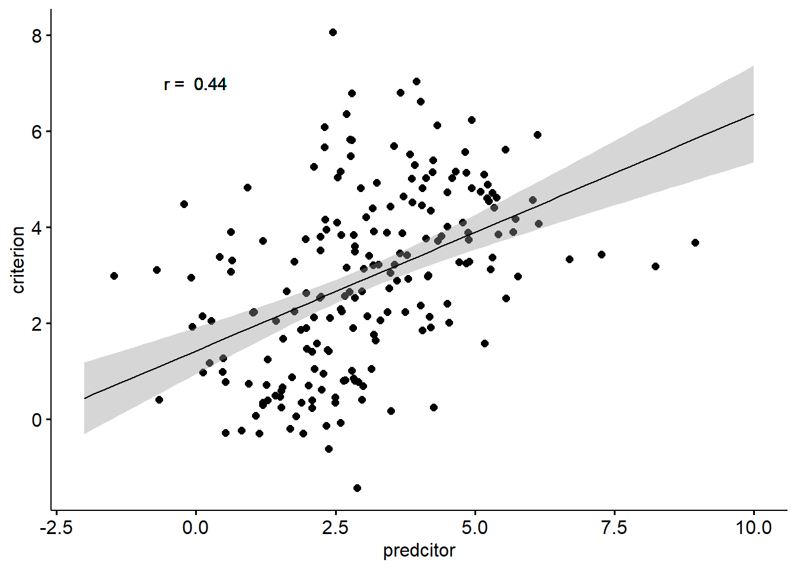
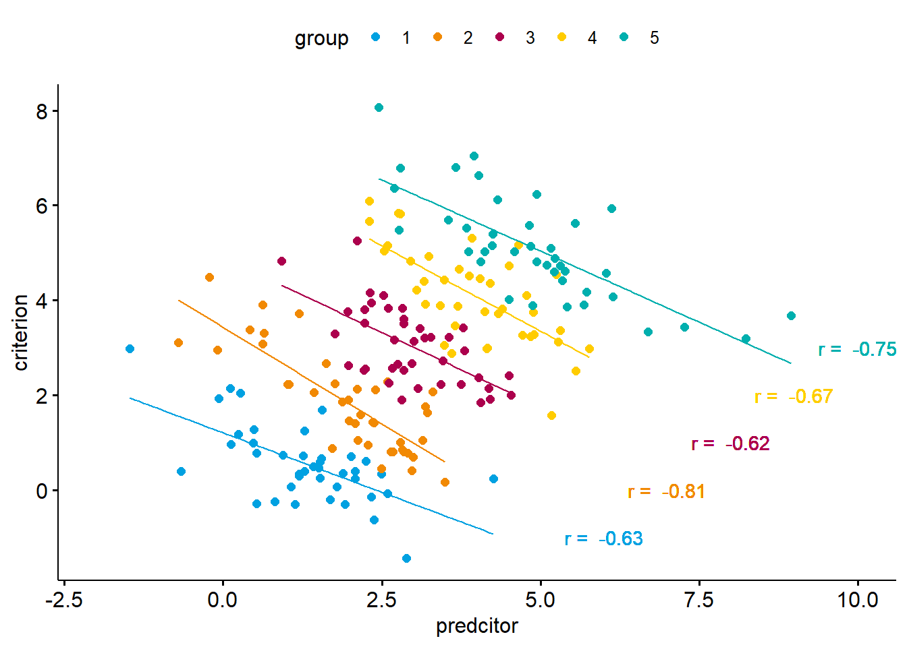
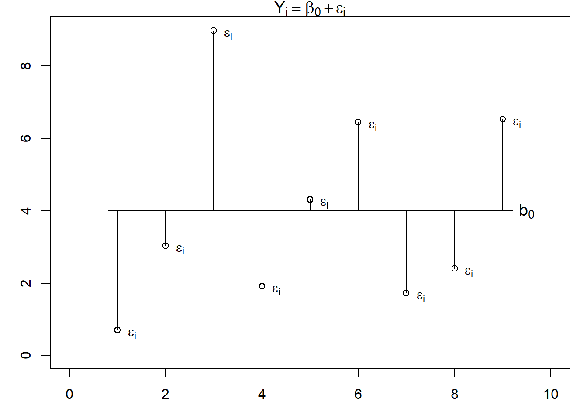
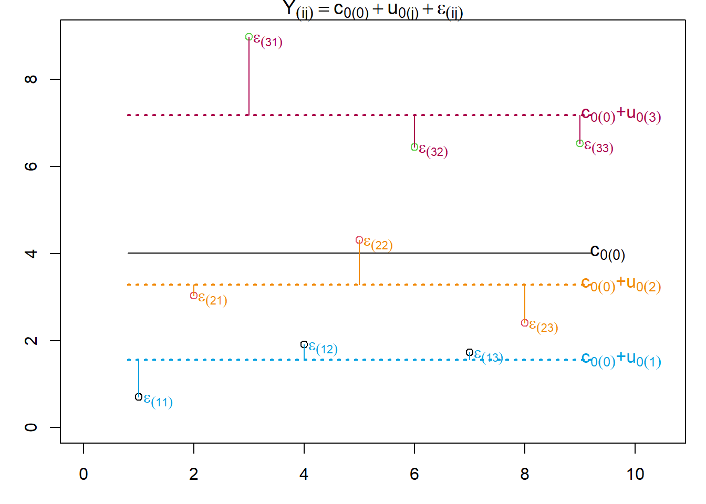
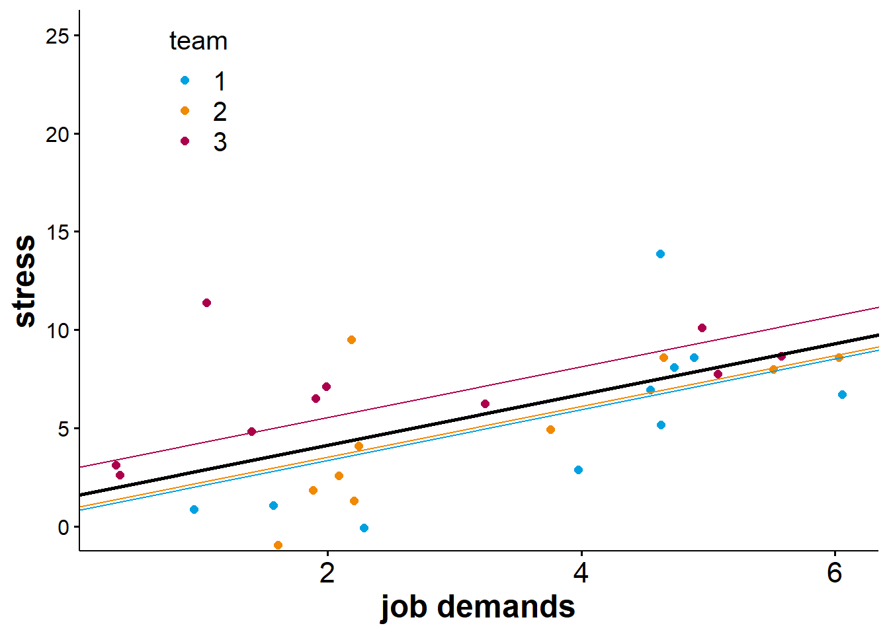
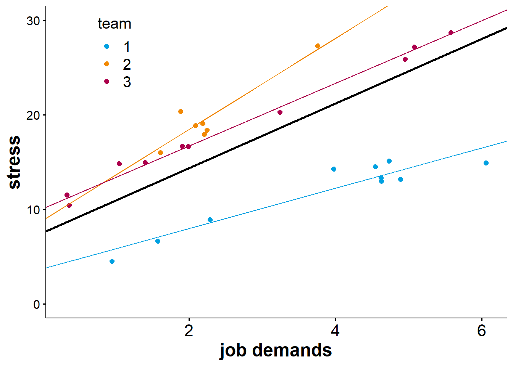

Multi-level models
In the real world (and in some psychological experiments), data is embedded in a hierarchical structure. If we want to apply a regression approach to hierarchical data, we need to consider this structure in our models.
Hierarchical data structures consist of at last two levels at which the observation of variables is possible. Per convention, we define the most fine-grained level of observation as level 1. This is also the level at which we measure the criterion. Since Level 1 is the most fine-grained one it also has the highest number of observations. At level 2, we can cluster the level 1 data into several distinct groups with group membership defined by level 2 variables. We can then cluster level 2 data into distinct groups at level 3, and so on.
Here are some examples:
- measurement of performance (criterion) in an experiment in several trials (level 1) per participant (level 2)
- average grades (criterion) by pupils (level 1) within classrooms (level 2) within schools (level 3)
- experienced stress (criterion) of team members (level 1) in different teams (level 2) in different companies (level 3) in different industries (level 4)
One common aspect of those examples is that the criterion is always measured at level 1. For example, a school does not have a grade of its own. Instead, the grades are assigned to students. Likewise, a team in an organisation does not experience stress, the people working in it do. That is not to say that we cannot compute an average school grade or team stress level, but the data we need to compute such scores are always gathered at level 1.
Another common aspect of hierarchical data structure is that we can measure predictor variables at each level. Let’s consider the example ‘experiences stress’ from above:
- Level 1: team members’ personality, age, gender, organisational tenure
- Level 2: team size, team tenure, team leader leadership style
- Level 3: company reputation, size, market share
- Level 4: industry-level wage level, work hazards, degree of unionisation
We could reasonably postulate hypotheses linking any (or all) of the variables above to the criterion (experienced stress). However, the critical question is how to approach a test of these hypotheses in an appropriate way. The answer is: by using multi-level models.
Multi-level models (also known as hierarchical linear models, mixed effects models, or nested-data models) are regression models that take the hierarchical structure of the data into account by partitioning the variance of the criterion accordingly. As such, they are not unlike repeated measures and mixed ANOVAs where the variance of the observed variable is partitioned into variance between and variance within participants. In fact, these ANOVAs are special types of multi-level models, which means that multi-level models are a more general and, thus, more flexible method to deal with hierarchical data.
Why considering the data structrue is important
The first question we might ask ourselves is why we should bother considering the data structure in the first place. Why not just aggregate the data and run an ordinary linear regression model using the aggregate scores as the criterion? The answer is twofold.
First, depending on our hypotheses aggregation may not be an option. For example, if we wanted to predict school grades from pupils’ cognitive styles (level 1 predictor), the gender of their teachers (a level 2 predictor) and the type of school (level 3 predictor), aggregating the data at the school level won’t work unless we have very good reason to believe that an aggregation of the predictors works without losing explanatory power.
Second, and more importantly, we may fall pray to the ecological fallacy. This fallacy means that we draw incorrect conclusion about lower-level predictor-criterion relations when analysing the data at an aggregate level. To illustrate this fallacy, lets look at an example.
In the example above, we are predicting a criterion from a predictor variable. As we can see, the correlation between the two variables is positive. Now let’s look at the same data again. This time, we will consider that there are five discount groups in our data.

We now get a completely different picture. Within each of the five groups, there is a strong negative correlation of the predictor and the criterion. In our case, neglecting the data structure implies an effect in the opposite direction of the effects we observe within each group. This extreme form of the ecological fallacy is also known as Simpson’s Paradox.
Now, does the fact that we obtain different results when considering instead of neglecting the data structure mean that one of the analyses is true while the other is wrong? Not really. When analysing data across groups (i.e., by neglecting group membership), the correlation we observe is a statistical truth, that is, the relation between predictor and criterion exists. However, when we try to make sense of why it occurs, we need to consider the data structure. Why do we get a positive correlation when, in fact, the relation is negative within each group? The answer is: because the groups differ systematically. In other words, the positive correlation between predictor and criterion is a result of group differences (a level 2 effect), whereas at level 1 the relation is negative.
What the example above should make clear is that considering the hierarchical nature of our data provides us with a clearer picture of how our predictors relate to the criterion of interest. This, in turn, will allow us to draw more appropriate inferences about our data. The question now is: how?
The basics of multi-level modelling
The core idea of multi-level modelling is, put very simply, to predict level 1 criteria from predictors at various levels. To this end, the variance of the predictor is partitioned into variance at level 1, variance at level 2, and so on. In order to understand how that works, we first need to understand the difference between fixed effects and random effects.
Fixed effects are our model’s predictors. We estimate the strength of their relationship with the criterion as regression weights. As we already know there regression weights indicate how the criterion changes when statistically controlling for the other predictors.
Random effects are unsystematic (or unexplained) variances. They represent the variability of a parameter assuming a normal distribution. Random effects can be used to model the variability of the criterion but also the variability of fixed effects.
We already know a model containing fixed and random effects, namely the simple linear regression. Let’s recap it basic formula:
\[Y = b_0 + b_1X_1 + \epsilon\] With:
\[\epsilon \sim N(0, \sigma^2)\]
Here, the parameters \(b_0\) and \(_b1\) are fixed effects. They are the basis for our model prediction \(\hat{Y}\). In contrast, the residual \(\epsilon\) is a random effect. While we compute the difference between our model prediction \(\hat{Y}\) and the actual criterion \(Y\) for each observation, we summarise the residual \(\epsilon\) via a single parameter, namely its variance.
From simple linear regressionn to multi-level modelling
Let’s start with the most simple regression model, which we will call a single-level intercept only model.
\[Y_i = b_0 + \epsilon_i\].
In this model, we have only two effects: one fixed effect, namely the intercept \(b_0\), and one random effect, the residual \(\epsilon\). According,y \(Y_i\) represent the level of \(Y\) for the \(i\)th observation, and \(\epsilon_i\) is the specific deviation of the \(i\)th observation from the model prediction (i.e., the intercept). The model assumes that all the variance of \(Y\) is unsystematic and that the unsystematic differences \(\epsilon_i\) originate on level 1 (the only level in this model).
Let’s now assume that we know that there is a variable on a higher level (level 2) that allows grouping our level 1 data. There are two ways to handle such a situation. We could either treat the grouping variable as a categorical fixed effect, modelling its relationship with the criterion via a regression weight in a single-level model. Alternatively, we could treat it as a random effect in a two-level model. In our example, we would include a random effect for the intercept of the model (our sole fixed effect).
The decision whether to model the effects of a grouping variable as a fixed or a random effect depends on what we are interested in. If we want to examine the influence of a certain grouping variable, we usually model it as a fixed effect.
As a rule of thumb, we should model something as a fixed effect if we would sue the same grouping (same variable, same levels) in a replication of our study. This includes, experimental manipulations, studying gender effects, etc.
If,in contrast, the grouping variable itself is a random sample (e.g., a sample of schools or a sample of teams in an organisation), we should model it as a random effect. In such cases, we are no interested in how switching from one category to another affects the criterion. Likewise, we would not insist on studying the exact same groups in a replication, but would instead draw another random sample (e.g. a different set of schools or different teams).
Let’s now look at the most simple two-level model, which assumes that the intercept of the intercept-only model varies between groups formed by a level 2 grouping variable. Note that we will use a slightly different syntax. In this syntax, we will put the levels at which variables or parameters vary in parentheses. This makes it a little easier to parse the indices of the regression parameters as we will see below. Here is the model equation:
\[Y_{(ij)} = b_{0(j)} + \epsilon_{(ij)}\] Where:
\[b_{0(j)} = c_{0(0)} + u_{0(j)}\] Which means that:
\[ Y_{(ij)} = c_{0(0)} + u_{0(j)} + \epsilon_{(ij)} \] With:
\[u_{0(j)} \sim N(0, \sigma_{u_{0(j)}}^2)\] and \[\epsilon_{(ij)} \sim N(0, \sigma_{\epsilon_{(ij)}}^2)\]
The notation using parentheses in the indices allows us to differentiate two pieces of information for the model parameters: a) the parameter name, that is, which effect they correspond to (e.g., \(b_0\) to represent the intercept and \(b_1\) the effect of the first predictor) and b) whether that parameter is a constant (indicated by the value 0 in parentheses) or whether it varies randomly, indicated by the letter corresponding to the level at which the parameter varies (e.g., \(j\) if the parameter varies randomly at level 2). Accordingly, the index of the parameter \(b_{0(j)}\) reveals that it is the model intercept (the parameter \(b_0\)), and that it varies between the level-2 units (indicated by the \(j\) in parentheses).
In the model \(Y_{ij}\) is the criterion value of the \(i\)th observation in the \(j\)th group. The model intercept \(b_{0(j)}\) is split into two components, the mean intercept across all \(j\) groups \(c_{0(0)}\) (the grand mean, which no longer varies between groups, hence the zero in parentheses), and a random component, the random intercept \(u_{0(j)}\). This random component \(u_{0(j)}\) indicates how the intercept of the \(j\)th level 2 unit deviates from the fixed intercept \(c_{0(0)}\). However, since we model \(u_{0(j)}\) as a random effect, we only estimate its variance.
Let’s now turn to the final parameter, the residual \(\epsilon_{(ij)}\). In this multi-level model, the intercept works a bit differently than in a single-level model. It indicates how the \(i\) observations in the \(j\)th group differ from that group’s intercept, which we get by adding \(c_{0(0)}\) (the fixed intercept) and \(u_{0(j)}\) (the \(j\)th group’s deviation from the fixed intercept). What this means is that the residual \(\epsilon_{(ij)}\) no longer represents the deviations between the model prediction and the actual criterion values, but instead denotes the (unexplained) variance within each group.
Let’s look at an example and visualise it to get a better grasp of the differences between the two models. Let’s assume we have data from 9 participants (level 1) nested in three groups (level 2). We have one observation per participant. If we modelled the data with a single-level intercept only model, this is how it would look.

We can see, that the residuals \(\epsilon_i\) tell us how each participant’s score deviates from the intercept \(b_0\). now let’s look at the multi-level version of the model.

As we can see, we can now construe not only the fixed intercept \(c_{0(0)}\) but also individual intercept for each of the three groups, which we denote as \(c_{0(j)}\). The residual \(\epsilon_{(ij)}\) now tells us how a participant’s score deviates from the intercept of that participant’s group.
The crucial difference between the two models is that single-level model only tells us that there is unexplained variance in the criterion, whereas the multi-level model also tells us at which level this unexplained variance originates.
A multi-level model containing only a fixed and a random intercept (as the one in our example) is also known as the variance component model. By comparing the two random effects, we can infer which proportion of the variance of \(Y\) originates between versus within the level 2 groups. We can do so by computing the intra-class correlation (ICC).
\[ICC = \frac{\sigma_{u_{0(j)}}^2} {\sigma_{u_{0(j)}}^2 + \sigma_{\epsilon_{ij}}^2}\] The larger the variance between groups, indicated by the variance of the random intercept \(\sigma_{u_{0(j)}}^2\), the larger the ICC. Thus, a larger ICC means that values within groups are more similar, which means they are more highly correlated.
Multi-level models with random intercepts (and fixed slopes)
The variance component model is usually not very interesting because it contains no predictors. In a multi-level model, we can add predictors at each level. We will, for now, only focus on fixed slopes of level-1 variables. As a general rule, a fixed effect in a multi-level model will reduce the unexplained variance at its level. That is, a level 1 fixed effect will explain some of the residual variance, whereas a fixed effect at level 2 will explain some of the variance captured in the random intercept (in a sense we make some of the variability of the intercepts systematic by adding level 2 fixed effects).
Let’s look at the model syntax for a two-level model containing a fixed slope for a level-1 predictor.
\[Y_{(ij)} = b_{0(j)} + b_{1(0)}X_{(ij)} + \epsilon_{(ij)}\] With:
\[b_{0(j)} = c_{0(0)} + u_{0(j)}\] Yielding:
\[Y_{(ij)} = c_{0(0)} + u_{0(j)} + b_{1(0)}X_{1(ij)} + \epsilon_{(ij)}\]
Let’s try to make sense of the notation. Again, \(Y_{(ij)}\) is the criterion value of the \(i\)th observation in the \(j\)th group. The index of the model intercept \(b_{0(j)}\) tells us a) that it is the intercept (parameter \(b_0\))and b) that it varies between the \(j\) groups (\(j\) in parentheses). We can partition this effect into its fixed component \(c_{0(0)}\), its index telling us that it no longer varies between groups (thus the 0 in parentheses), and a random component \(u_{0(j)}\). The index of this random component tells us that is belongs to the intercept and varies between the \(j\) groups.
The name of the next parameter \(b_{1(0)}\) reveals that this is regression weight of the first predictor (\(b_1\)) and that it does not vary between groups (indicated by the zero in parentheses). We can further see that \(b_{1(0)}\) is is a level-1 fixed effect because there is a value of the accompanying predictor \(X_{1(ij)}\) for each of the \(i\) observations within each of the \(j\) groups (the \(ij\) in parentheses tells us that \(X_1\) varies at both levels).
Below is a visualisation of what a random intercept model with a single level-1 predictor could look like.

In the figure above, the bold black line represents the fixed part of the model. The intercept of this regression line is \(c_{0(0)}\), and its slope is \(b_{1_(0)}\). We can also see that the model has random intercepts for each team. This means that the regression line is shifted upward or downwards depending on which team we look at. Since the slope for the predictor job demands does not vary at level 2, it is equal for all teams as indicated by the regression lines running parallel. What this means is that while members of different teams seem to report different overall levels of stress, the increase in stress as job demands increase is equal for members of all teams.
A fixed will usually explain some of the unexplained variance at its own level. For example, in a two-level model, including a level-1 predictor as a fixed effect will reduce the residual \(\epsilon_{(ij)}\). The variance of the model intercepts might also change slightly when the average magnitude of the level-1 predictor or its relationship with the criterion differ between level-2 units (and be it due to chance).
If that reminds you of mixed ANOVAs where we separated effects into within-subject and between-subject effects, that is no coincidence. A mixed ANOVA can be considered a special case of multi-level model.
Fixed effects at higher levels
In the previous example, the model included a fixed effect of a level-1 predictor. Of course, we could also include a predictor at level 2 (or at higher levels if the model contained them). Let’s assume we want to run a random intercept model with one fixed effect at level 1 and another at level 2. Here is what the model would look like:
\[Y_{(ij)} = b_{0(j)} + b_{1(0)}X_{1(ij)}+b_{2(0)}X_{2(j)}+\epsilon_{(ij)}\] Which we can rewrite as to disentangle the fixed and random component of the intercept:
\[Y_{(ij)} = c_{0(0)} + u_{0(j)} + b_{1(0)}X_{1(ij)}+b_{2(0)}X_{2(j)}+\epsilon_{(ij)}\] The model is the same as the one from the previous section with the exception of the newly added predictor \(X_{2(j)}\) and its associated fixed slope \(b_{2(0)}\). The notation tells us that \(X_2\) varies only between the \(j\) groups and is constant for all \(i\) levels within each group. Furthermore, we can see that the slope for \(X_2\) does not vary randomly (indicated by the zero in parentheses in the parameter’s index). This makes sense because we do not have a higher level at which it could vary.
This model is interesting for one specific reason. It models differences between groups as part random (via the random intercepts) and part systematic (via the fixed effect of \(X_2\)). The parameter for the random intercepts we estimate (\(\sigma^2_{u_0(j)}\)), thus, contains all the differences between the \(j\) groups that the fixed effect \(b_{2(0)}\) does not account for.
If we compare the random-intercept model containing fixed effects at both levels to a model excluding the level-2 fixed effect, we will observe that their residuals remain similar. However, the random variance of the intercept will be lower in the model including the fixed level-2 effect. Again, this shows that a fixed effect will explain some of the unexplained variance at its own level. In other words, a predictor that varies only between groups (and is constant within groups) cannot explain the unexplained variability within groups.
Multi-level models with random intercepts and slopes
When we run multi-level models, we are not restricted to modelling random intercepts. We can also treat the slopes of our predictors as random effects, given that the respective predictor is not measured at the highest level. Let’s consider a model with a single level-1 predictor that contains random intercepts as well as random slopes for that predictor. Here is what the model looks like:
\[Y_{(ij)} = b_{0(j)} + b_{1(j)}X_{1(ij)} + \epsilon_{(ij)}\] Here:
\[b_{0(j)} = c_{0(0)} + u_{0(j)}\] And:
\[b_{1(j)} = c_{1(0)} + u_{1(j)}\] As always, we assume that the random effects follow a normal distribution with mean zero. We can rewrite the model as follows:
\[Y_{(ij)} = c_{0(0)} + u_{0(j)} + c_{1(0)}X_{1(ij)} + u_{1(j)}X_{1(ij)} + \epsilon_{(ij)}\] We already know what \(Y_{(ij)}\), \(c_{0(0)}\), \(u_{0(j)}\), and \(\epsilon_{(ij)}\) denote. That leaves the two parameters related to the level-1 predictor \(X_1\). Here, \(c_{1(0)}\) is the fixed effect of \(X_1\), which we can interpret as the average slope. The corresponding random effect, \(u_{1(j)}\) indicates how the slopes differ from the fixed slope for \(j\) groups. As with all random effects, we compute the deviations of the group slopes for the fixed slope, but we estimate \(u_{1(j)}\) as a single parameter via the variance of the group slopes. Below is a visualisation of a random slope model.

From the figure above, we can see that while job demands are positively associated with stress for people in all teams, the strength of this association is subject to some variation, meaning that the slope is steeper for members of some teams than others.
The figure above should remind you of the interaction effects of continuous and categorical predictors in multiple linear regression. Those interaction effects essentially resulted in different regression lines for each category.
Even though multiple-regression is based on a purely between-subjects design, this analogy holds. If you will, we can think of random slopes as unspecific interaction effects between the respective predictor and an modeled variable at a higher level (of course, part of the variability in slopes can also be due to chance alone).
Cross-level interactions
The final type of effect we need to talk about in the context of multi-level models is a cross-level interaction. Cross-level interactions are interactions of predictors located at difference levels. For example, we could model the interaction of a level-1 predictor and the level-2 grouping variable in a two-level model. Let’s look at the model formulation for a two-level model containing a cross-level interaction:
\[Y_{(ij)} = b_{0(j)} + b_{1(j)}X_{1(ij)} + b_{2(0)}X_{2(j)} + b_{3(0)}X_{1(ij)}X_{2(j)}+\epsilon_{(ij)}\] We can rewrite this model as follows:
\[Y_{(ij)} = c_{0(0)} + u_{0(j)} + c_{1(0)}X_{1(ij)} + u_{1(j)}X_{1(ij)} + b_{2(0)}X_{2(j)} + b_{3(0)}X_{1(ij)}X_{2(j)}+\epsilon_{(ij)}\] As we can see, the model contains random intercepts but also random slopes for the level-1 predictor \(X_{1(ij)}\). Besides the fixed effects of the two predictors, we also have a fixed effect for their interaction, namely \(b_{3(0)}\). This interaction term is similar to interactions in regular regression models in that it is simply the product of the two variables. Similar to within-between interactions in a mixed ANOVA, the cross-level interaction indicates that the strength of the relationship between the level-1 predictor \(X_{1(ij)}\) and the criterion \(Y_{(ij)}\) depends on the magnitude (or category) of the level-2 predictor \(X_{2(j)}\).
Including a cross-level interaction in a multi-level model with random slopes for the lower-level predictor involved in the interaction allows us to explain some of the unspecific interaction effect modelled via the random slopes. Just as adding main effects allows us to explain some of the unexplained variance at their level, adding cross-level interactions allow us to explain some of the random variation of the slopes.
Theoretically, it is possible to model random slopes for cross-level interactions. The only requirement is that the higher-levelled predictor is not located at the model’s highest level. For example, we can model random slopes for a cross-level interaction of a level-1 predictor and a level-2 predictor is the model has at least three levels. Those random slopes would then represent an unspecific three-way interaction with the possible moderating variable residing on the third level.
Running multi-level models in R
R offers several packages that allow computing multi-level models. We will use the lme4 package as it is perhaps the most commonly used multi-level package. This package has one drawback: it does not compute \(p\)-values (the reason is that the authors of the package noticed that there it is non-trivial to compute the correct degrees of freedom for the \(t\)-distributions used to test for statistical significance that holds when certain conditions such as balanced design are not met). Therefore, we will use an additional package called lmerTest that computes the degrees of freedom and, consequently, the \(p\)-values using a Satterthwaite-correction. Since lmerTest has lme4 as a dependency, installing lmerTest will also and install lme4, and lmerTest via the library function will also load lme4. However, because lme4 is the real workhorse, we will frequently refer to it in the following sections.
The way will will use the lmer function for now requires us to define two arguments (similar to the regular regression function lm):
- formula (required): a formula type object telling the function which variable to predict and what parameters to include in the model.
- data (optional): a data frame containing the data; in theory, we could omit defining the argument if all of our variables existed as separate objects in our environment, but using data frames is much preferable.
Formulae for multi-level models
The first thing we need to understand is how the syntax for multi-level model formulae works in R. For fixed effects, the formula is similar to that of regular regression models, so we need to focus on the random effects. Generally speaking, random effects are written in parentheses. Within the parentheses, we use a pipe operator (|) to separate the parameters we want to model random effects for (left-hand side of the pipe) and the grouping variable(s) by which the effects should vary (right-hand side of the pipe). Let’s look at a few basic examples:
## Examples of multi-level formulae using lme4-syntax in a two-level model
## with "group" as the level-2 grouping variable and one level-1 predictor X
# variance component model (intercept-only)
y ~ 1 + (1|group)
# random intercept model with one predictor X1
y ~ 1 + X + (1|group)
# random slope model with correlated random intercepts and slopes
y ~ 1 + X + (1 + X|group)
# random slope model with uncorrelated random intercepts and slopes
y ~ 1 + X + (1 + X||group)Now that we have a basic understanding of how the formulae work in the lme4 package, we can turn to the function we will use: lmer. Since we will use lme4 in conjunction with lmerTest, it is important to know that lmerTest has a function called lmer that overrides the original lmer function of lme4. This is intentional and will allow us to write code as if we were using lme4 while also providing us with p-values in the model output.
Let’s now write our first multi-level model in R. As always, we first need some hierarchical data. We will make up some data from a fictional experiment, in which several participants worked on a number of trials each. The data includes performance as a dependent variable, a continuous independent variable at level 1 indicating the stimulus intensity, and a level-two independent variable indicating task difficulty. Let’s have a look at an excerpt of the data (stored in df1):
ID difficulty trial intensity performance
1 1 difficult 1 8 30.15
2 1 difficult 2 9 35.55
3 1 difficult 3 15 34.26
4 1 difficult 4 10 29.65
5 1 difficult 5 10 29.80
6 1 difficult 6 15 34.00From that little excerpt, we can see that difficulty is a level-2 predictor as it is constant for a participant. In contrast intensity varies on the trial level. We can now start building different models. The first model, we will look at is the variance component model. Here is the syntax:
# load the required libraries (lmerTest automatically loads lme4)
library(lmerTest)
# define the variance component model (intercept only)
mod1 = lmer(performance ~ 1 + (1|ID), data = df1)Running this line of code will create a new object called mod1 in the environment (the object type is labelled as “Formal class lmerModLmerTest, but we do not need to concern ourselves with that). Similar to regular regression models, simply calling the object’s name will not yield a very informative output. instead, we need to feed the model into the summary function as its sole argument.
# display the the multi-level model
summary(mod1)Running the code above will produce a detailed output of the model (see below):
Attaching package: 'lmerTest'The following object is masked from 'package:lme4':
lmerThe following object is masked from 'package:stats':
stepLinear mixed model fit by REML. t-tests use Satterthwaite's method [
lmerModLmerTest]
Formula: performance ~ 1 + (1 | ID)
Data: df1
REML criterion at convergence: 5384.7
Scaled residuals:
Min 1Q Median 3Q Max
-3.1994 -0.6355 -0.0100 0.6315 3.5175
Random effects:
Groups Name Variance Std.Dev.
ID (Intercept) 60.29 7.764
Residual 20.06 4.479
Number of obs: 900, groups: ID, 30
Fixed effects:
Estimate Std. Error df t value Pr(>|t|)
(Intercept) 38.791 1.425 29.000 27.21 <2e-16 ***
---
Signif. codes: 0 '***' 0.001 '**' 0.01 '*' 0.05 '.' 0.1 ' ' 1The top of the output contains some general information such as that the \(t\)-tests of the fixed effect parameters are computed using Satterthwaite’s method (this is what we use lmerTest for), and that the model parameters were estimates using REML (restricted maximum likelihood). We can usually ignore this information.
Two parts of the output are noteworthy. The first is the section labelled “Random effects”. here, R shows us two random effects. The first is a random intercept that varies between participants, indicated by the grouping variable for that random effect being “ID”. The second is the residual. Since these are random effects, we estimate them as a variance or standard deviation (R neatly computes both for us). In the example above, we can see that there is somewhat more variability within participants (i.e., at level 1) than between participants (at level 2).
The second part of interest is the “Fixed effects” table. Here, we can see the fixed regression parameters along with their standard error and \(t\)-value. Since we are using lmertest, the output also contains the degrees of freedom and a \(p\)-value. In this model, we have only one fixed effect, namely the fixed intercept. As we can see, it is significantly different from zero.
Let’s now gradually add effects to the model. We will start by adding a fixed slope for the level-1 predictor, then add a fixed slope for the level-2 predictor, then add random slopes for the level-1 predictor and finally include the cross-level interaction. Here is the syntax:
# fixed slope model with random intercepts
mod2 = lmer(performance ~ 1 + intensity + (1|ID), data = df1)
# random intercept model with fixed slopes for both predictors
mod3 = lmer(performance ~ 1 + intensity + difficulty + (1|ID), data = df1)
# model with random slopes for the level-1 predictor
mod4 = lmer(performance ~ 1 + intensity + difficulty + (1 + intensity|ID), data = df1)
# random slopes model with a cross-level interaction
mod5 = lmer(performance ~ 1 + intensity * difficulty + (1 + intensity|ID), data = df1)We can now display each model by feeding it into the summary function. Let’s have a look at each model’s output and compare it to the preceding model. Here is the output for model 2:
Linear mixed model fit by REML. t-tests use Satterthwaite's method [
lmerModLmerTest]
Formula: performance ~ 1 + intensity + (1 | ID)
Data: df1
REML criterion at convergence: 4814.9
Scaled residuals:
Min 1Q Median 3Q Max
-3.1988 -0.6494 0.0148 0.6452 3.3583
Random effects:
Groups Name Variance Std.Dev.
ID (Intercept) 58.41 7.642
Residual 10.39 3.223
Number of obs: 900, groups: ID, 30
Fixed effects:
Estimate Std. Error df t value Pr(>|t|)
(Intercept) 28.34588 1.44662 33.10797 19.59 <2e-16 ***
intensity 1.03825 0.03643 869.31076 28.50 <2e-16 ***
---
Signif. codes: 0 '***' 0.001 '**' 0.01 '*' 0.05 '.' 0.1 ' ' 1
Correlation of Fixed Effects:
(Intr)
intensity -0.253Let’s first look at the fixed effects. As we can see, there is now a fixed slope for the level-1 predictor “intensity” in addition to the fixed intercept. We can further see that the fixed slope is significant, meaning that higher stimulus intensity leads to better performance (we can only make this causal inference because our data stems from a fictional experiment and stimulus intensity is a manipulated variable). The fractional degrees of freedom are due to the Satterthwaite-correction.
Let’s now look at the random effects. If we compare them to the previous model, we will notice that the residual variance has decreased by about 50%, and the variance of the intercepts is also slightly lower. The first makes sense because we have now included a level-1 predictor that should explain some of the level-1 variability. The unexplained level-1 variance captured by the residual is, thus, lower. The fact that the variance of the intercepts also decreased somewhat tells us that the average stimulus intensity is not equal for all participants. To the extent that stimulus intensity is related to the criterion (which it is, in our case), such differences in the average level will reduce some of the unexplained variance of the intercepts.
Let’s now look at the model including the fixed effect for the level-2 predictor.
Linear mixed model fit by REML. t-tests use Satterthwaite's method [
lmerModLmerTest]
Formula: performance ~ 1 + intensity + difficulty + (1 | ID)
Data: df1
REML criterion at convergence: 4782.5
Scaled residuals:
Min 1Q Median 3Q Max
-3.2095 -0.6512 0.0152 0.6462 3.3429
Random effects:
Groups Name Variance Std.Dev.
ID (Intercept) 21.62 4.650
Residual 10.39 3.223
Number of obs: 900, groups: ID, 30
Fixed effects:
Estimate Std. Error df t value Pr(>|t|)
(Intercept) 22.31523 1.26414 33.32054 17.652 < 2e-16 ***
intensity 1.03892 0.03643 869.82329 28.521 < 2e-16 ***
difficultyeasy 12.04787 1.71149 27.99767 7.039 1.17e-07 ***
---
Signif. codes: 0 '***' 0.001 '**' 0.01 '*' 0.05 '.' 0.1 ' ' 1
Correlation of Fixed Effects:
(Intr) intnst
intensity -0.289
difficltysy -0.677 -0.001Let’s again focus on the fixed effects first. The new predictor “difficulty” is a factor with two levels, which means that the lmer function dummy-codes it (similar to the lm function). From the model output, we can infer that its level “difficult” is being treated as the reference level, and the fixed effect tells us how performance increases if we switch to difficulty “easy”. The effect is statistically significant.
Now let’s look at the random effects. Since “difficulty” is a level-2 predictor and, thus, constant at level 1 is cannot explain any level-1 variance. We can confirm this by comparing the residual variance of this model to the previous one that excluded the level-2 predictor. Save for some rounding effects, the residual is the same. In contrast, due to the level-2 predictor being significantly related to the criterion, we now know more about why the intercepts for our participants differed. A substantial part of this variance is due to the fact that some participants worked on an easy version of the task while for others the task was difficult. This means that we have now explained some of the previously unexplained variance at level 2. Accordingly, the random effect indicating the variance of the intercepts is much smaller in the new model when compared with its predecessor.
We will now look at the model including random slopes.
Linear mixed model fit by REML. t-tests use Satterthwaite's method [
lmerModLmerTest]
Formula: performance ~ 1 + intensity + difficulty + (1 + intensity | ID)
Data: df1
REML criterion at convergence: 4723.8
Scaled residuals:
Min 1Q Median 3Q Max
-2.8487 -0.6607 0.0206 0.6497 3.3145
Random effects:
Groups Name Variance Std.Dev. Corr
ID (Intercept) 17.7825 4.2169
intensity 0.1425 0.3774 -0.28
Residual 9.2619 3.0433
Number of obs: 900, groups: ID, 30
Fixed effects:
Estimate Std. Error df t value Pr(>|t|)
(Intercept) 23.73070 1.15541 28.68547 20.539 < 2e-16 ***
intensity 1.03622 0.07727 27.20176 13.410 1.66e-13 ***
difficultyeasy 9.19175 1.55680 27.98708 5.904 2.37e-06 ***
---
Signif. codes: 0 '***' 0.001 '**' 0.01 '*' 0.05 '.' 0.1 ' ' 1
Correlation of Fixed Effects:
(Intr) intnst
intensity -0.303
difficltysy -0.675 0.002As soon as we include random slopes, things become a little messier with the random effects. But let’s first look at the fixed effects. We did not add any new fixed effects, but we can see that the parameter estimates for the ones we already had in the model are slightly different. The most noteworthy change is that the standard error of the fixed slope of “intensity” is larger, and its t-value and degrees of freedom are lower, too. Since the effect is rather strong, it does not change the fact stimulus intensity is a significant predictor of performance.
When we look at the random effects, we should notice three things. First, there is now another random effect indicating the variance (or standard deviation) of the slopes of intensity. Second, we now have a new parameter indicating the correlation of the random intercepts and the random slopes of intensity. This correlation tells us that participants with lower than average intercepts tend to have slightly above average slopes. Finally, adding the random slopes slightly reduced both the residual variance and the variance of the intercepts.
Let’s now look at the final model including the cross-level interaction.
Linear mixed model fit by REML. t-tests use Satterthwaite's method [
lmerModLmerTest]
Formula: performance ~ 1 + intensity * difficulty + (1 + intensity | ID)
Data: df1
REML criterion at convergence: 4712.4
Scaled residuals:
Min 1Q Median 3Q Max
-2.9023 -0.6682 0.0338 0.6418 3.3226
Random effects:
Groups Name Variance Std.Dev. Corr
ID (Intercept) 16.37095 4.046
intensity 0.07787 0.279 -0.12
Residual 9.26467 3.044
Number of obs: 900, groups: ID, 30
Fixed effects:
Estimate Std. Error df t value Pr(>|t|)
(Intercept) 24.8832 1.1674 27.4303 21.315 < 2e-16 ***
intensity 0.7802 0.0876 26.0964 8.907 2.16e-09 ***
difficultyeasy 6.9351 1.6485 27.2680 4.207 0.000251 ***
intensity:difficultyeasy 0.5078 0.1235 25.7388 4.112 0.000354 ***
---
Signif. codes: 0 '***' 0.001 '**' 0.01 '*' 0.05 '.' 0.1 ' ' 1
Correlation of Fixed Effects:
(Intr) intnst dffclt
intensity -0.335
difficltysy -0.708 0.237
intnsty:dff 0.238 -0.709 -0.332Adding the cross-level interaction had several effects. First of all, we now have another significant fixed effect indicating that the effect of stimulus intensity depends on the difficulty of the task. We can interpret the fixed effects in the same fashion as in a regular multiple regression analysis. Since task difficulty is a dummy-coded categorical predictor, the intercept represents the fixed intercept in the reference category (difficult task), and the fixed slope of intensity marks the effect of stimulus intensity in the reference category. The fixed effect of task difficulty states how the fixed intercept of the model changes when we switch difficult tasks (the reference category) to easy tasks. Finally, the cross-level interaction indicates how the fixed slope of stimulus intensity changes if we switch to easy tasks. This in mind, we can now state that the positive effect of stimulus intensity on performance is stronger for easy than for difficult tasks.
Let’s now look at the random effects. Since we have only added a fixed effect, their number is identical to that of the previous model. Since random slopes indicate unspecific cross-level interaction effects, adding a significant cross-level interaction must decrease the variance of the slopes. This is exactly what we observe: the random slopes of intensity is lower in the final model than in its predecessor. We also notice a slight reduction in the variance of the random slopes. The reason for this reduction is the correlation between random slopes and random intercepts. Were the random effects uncorrelated, the variance of the random intercepts would have remained unchanged save for rounding effects.
Comparing nested multi-level models
The five models we computed above are nested models, that is, each of the models is more complex than the previous one because it adds at least one new parameter. We could now ask ourselves whether adding a new parameter make the model better. Just as with regular regression models, “better” means that the model provides a better fit to the data. However, since we partition the unexplained variance in a multi-level model, we cannot compute \(R^2\) as a measure of model fit (remember that \(R^2\) is determined by a regression model’s residual variance).
If we want to compare nested multi-level models, we instead use likelihood-ratio tests. Since multi-level models are estimated using a (restricted) maximum likelihood method, we can compute the likelihood \(L\) of the model. From the likelihood \(L\) we can compute the model deviance \(D\).
\[D = -2 \cdot ln(L)\] The deviance is a measure of “badness”. A model is better, the lower \(D\) is. It can be shown that the difference between two model’s deviances \(D_1\) and \(D_2\) follows a \(\chi^2\)-distribution with degrees of freedom equalling the difference in model parameters \(k\).
\(D_2-D_1 \sim \chi_{k_{2}-k_{1}}\)
This test logic is conceptually similar to the comparison of nested regression models. The only difference is that the test is based on a different fit-metric and uses a different test statistic. Very conveniently, we can use the same function to compare nested multi-level models that we used to compare nested regular regression models, namely the function anova.
We can feed the anova function two or more multi-level models, and it will compare each model to its predecessor. Just as in the case of regular regression models, we need to make sure that the models are nested and entered in the correct order for the output of the function to make sense.
There is one other caveat: the anova function requires all models to be estimated via the maximum likelihood (ML) method. However, the default method for parameter estimation in lme4 is restricted maximum likelihood (REML). If we feed models estimated via REML into the anova function, the function will recompute the model using ML instead and then compare the models in the order in which we entered them. The potential problem is that the model parameters may slightly differ between the ML and REML method. If we plan to compare models in terms of their fit, it is, therefore prudent to use ML estimation from the start. We can do so by overwriting the default of the REML argument of the lmer function. The default value is TRUE leading to REML estimation, but if we set it to FALSE instead, the lmer function will estimate the model parameters using ML.
In our example rerunning the models with ML estimation does not change the overall picture (although in the more complex models, the exact parameter estimate differ slightly). We will therefore not reinvestigate the model outputs for the ML versions. Let’s instead have a look at the model comparisons of our five nested models. Here is the syntax:
# comparison of five nested multi-level models predicting performance in a fictional experiment
anova(mod1, mod2, mod3, mod4, mod5)once we run that code, we will see the following output in the console:
Data: df1
Models:
mod1: performance ~ 1 + (1 | ID)
mod2: performance ~ 1 + intensity + (1 | ID)
mod3: performance ~ 1 + intensity + difficulty + (1 | ID)
mod4: performance ~ 1 + intensity + difficulty + (1 + intensity | ID)
mod5: performance ~ 1 + intensity * difficulty + (1 + intensity | ID)
npar AIC BIC logLik deviance Chisq Df Pr(>Chisq)
mod1 3 5393.3 5407.7 -2693.6 5387.3
mod2 4 4820.6 4839.8 -2406.3 4812.6 574.652 1 < 2.2e-16 ***
mod3 5 4792.0 4816.1 -2391.0 4782.0 30.563 1 3.232e-08 ***
mod4 7 4738.5 4772.1 -2362.2 4724.5 57.538 2 3.205e-13 ***
mod5 8 4726.2 4764.6 -2355.1 4710.2 14.287 1 0.0001569 ***
---
Signif. codes: 0 '***' 0.001 '**' 0.01 '*' 0.05 '.' 0.1 ' ' 1Let’s go through that output. The top half is simply a reiteration of the model formulae for the convenience of the reader. The critical information is contained in the lower half. First, the function tells us for each model how many parameters it contains. Here, we count both fixed and random parameters. For example, the first model has three parameters: the fixed intercept, the residual variance and the variance of the random intercepts. Models 2 and 3 each add one fixed effects, meaning that the number of parameters increases by 1 each. Model 4 has two additional parameters even though we only added the random slopes. The second parameter is the correlation between the random intercepts and slopes that the lmer function estimates automatically. Finally, the fifth model adds one more fixed effect for a total of 8 parameters.
The table then shows several related fit indices that are all based on the log-likelihood. We already know that the deviance \(D\) is simply \(-2 \cdot ln(L)\). Akaike’s information criterion (AIC) is defined as:
\[AIC = D + 2k\]
Here, \(k\) is the number of model parameters. Just like \(D\), the AIC is a measure of “badness”. Adding two times the number of parameters to the deviation \(D\) means that AIC punishes the addition of new parameters. The Bayesian information criterion (BIC) is defined as:
\[BIC = k\cdot ln(N) + D\] Again, \(k\) is the number of parameters, and \(N\) is the total number of observations. Once more, lower values indicate a better model fit. Furthermore we can see that the BIC, similar to the AIC, punishes the addition of new model parameters, but the punishment is harsher (as soon as we have 8 or more observations, the multiplier for the model parameters exceeds that of the AIC) as it grows stronger with the total sample size.
Finally, the output of the model comparison shows us the \(\chi^2\)-distributed difference of the model deviations in the column labelled “Chisq” along with the degrees of freedom and the \(p\)-value for the test of differences in model fit. In our case, each model outperforms its predecessor in terms of model fit. The likelihood ration test comes in very handy when we want to test whether adding a random effect makes our model better because, other than fixed effects, the random effects do not come with a significance test on their own.
A final note on multi-level model formulation
As the example above shows, we have a lot of decisions to make when we decide how to model even relatively simple hierarchical data. Do we include random slopes or do we leave it at random intercepts? Should we include main effects only or do we want to model cross-level interactions? Some of these questions will be answered by the theoretical frameworks we base our studies on, but for others it is not that simple. In particular, few theories make statements about random effects (after all, it is the fixed effects we use to test our hypotheses).
As a rule of thumb, it is prudent to include random slopes whenever feasible because the assumption that the regression has the exact same slope for all higher-level units is quite a strong one (we will neglect for a moment that we make this exact assumption frequently when using other statistical techniques such as repeated measures ANOVA). In some cases, however, modelling random slopes is not possible. One reason might be that we do not have sufficient level-1 observations within each level-2 grouping unit or our general sample size is too small to reliably estimate a large number of model parameters. In other cases, even if the sample size is large, a model containing random slopes may not converge. What this means is that the optimisation algorithms used to estimate the model parameters run into problems, and the estimated model parameters may not be trustworthy. In those cases, it is wise to remove parameters until the model converges. Often, removing a random slope does the trick.